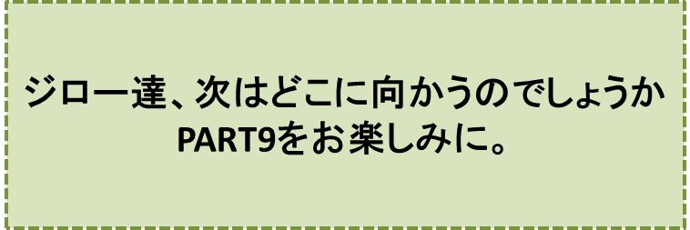

カラスの大王物語-PART8-
『宴の後』の巻
笠原正雄
ジロー達が帰ってくると
「楽しかったでしょ」
といつになく早口で、ミィミィ村長さんは声をかけました。
今夜中にしなければならない、ジロー達に対するとても大切な仕事が、まだ残されているためだったのですが、机の上に身をぐっと延ばし、焦った調子で言葉を続けます。
「君達、この大きなハンコの効用をご存知でしょ。このハンコを押せばあなた方の小さな体は2倍にでも3倍にでも、いやもしお望みなら10倍にでも大きくしてあげることができるのです。すばらしいことですよ！」
ジロー達は目を丸くしました。思いもよらぬ申し出だったからです。
どう返事すれば良いのでしょう。
ジロー達が戸惑っているのを見て、ミィミィ村長は自慢の耳を何度も丁寧に撫でながら、タマに向かって優しく語りかけます。
「タマさん、あなたを、飛び切り大きく、10倍ほど大きくしてあげましょう。
カラスの大王様の森の少し向うに、野生のライオンさん達が暮らしています。大自然の中で野生の暮らしを思う存分楽しんでいるんですよ。
ライオンさん達はタマさんの大きな身体を見て、群れのリーダーに、すぐさま選んでくれるでしょう。
タマさんは大自然の中でライオンの女王様として草原を走りまわり、太陽をいっぱいに浴びながら暮らすことができますよ。
暮らしにすっかり飽きたら、この島に帰っていらっしゃい。私達と一緒に楽しく暮らしましょう」
タマはそんな話は聞きたくない、我慢できない、というように口を開きました。
「タマは、お家（うち）に帰りたいの……。お母さんが心配して待ってくれているわ、きっと。
……タマがまだ小さかった頃、病気になって、お医者さまが、もう助からないでしょうと、おっしゃったのだけれど、お母さんが一晩中だっこしてくれて、ミルクを口に含ませてくれたりして、看病してくれたの。
タマが奇跡的に回復したとき、お母さんはポロポロ涙を流してくれたのよ。
涙よ。人間だけが目から雨粒のように出すのよ。涙がいっぱい、タマの顔に、雨のように降りそそいだのよ。
……このときのこと、忘れられない。
タマは人間の子よ。あなたがたの言う“ネコ”ではないわ、絶対」
ミィミィ村長はタマを説得するのをすっかり諦めて、ゴンに向って口を開きました。
「ゴン君はね。2倍で十分な大きさだ。やはり、カラスの大王様の森の近くに、野生のオオカミ達が暮している森があります。そこへ行きなさい。
君は、すぐさまオオカミの群れのリーダーになって……」
ゴンはミィミィ村長の言葉を遮るように、“ウゥ――……”と、低く声を出してから、口を大きく開けました。
「ボクもタマさんと同じ考えさ。ボクは人間の子なんだ。君達の言う“イヌ”ではないよ。人間の家（いえ）に生まれた人間さ。ボクはイヌって思ったことは一度もない。ジロー君の弟さ！」
ゴンは思い切り胸を張りました。そして続けます。
「ボクはジロー君と一緒にお家（うち）に帰りたい。お家（うち）では、お母さんやお父さん達がきっと、とても心配して待っているんだ。
ボクが小さい頃、迷子になって、一晩中、帰らなかったことがあったんだ。ジロー君は、ボクを探し歩いてくれた……。夜も寝ないでよ……。
二日目の夜、ボクは疲れ果てて草むらでぐったり横たわっていた……。そのとき
“ゴーンちゃん、ゴーンちゃん”
というお母さんの声に気が付き、とても勇気づけられて、最後の力をふりしぼって、お母さんの声の方に向って歩いていったんだ。お母さんが直ぐ見つけてくれて、駈け寄ってくれたんだ。ジロー君もお父さんも駆け寄ってきてくれた。
お母さんの目から今まで見たことがない水があふれ出てきた……。ボクはそのことを一度も忘れたことはない……。
タマさんが言ったように、人間だけが目から水をいっぱい流せるんだ。しょっぱい涙、ボクは一生忘れない。ボクは人間の家（いえ）に生まれた子。これからもずっと人間のまま生きていく。勿論」
ゴンは胸を張りました。
ミィミィ村長は、気落ちした様子でしたが、しばらくして気を取り直すと、今度はジローに向かって、うつむき加減で口を開きました。
「ジロー君、申し訳ないけれど、君を大きくすることはできないのです……。
カラスの大王様がおっしゃっているように、動物は大きくしても善くもならないし、悪くもならない。だから安心して大きくすることができます。
ところが人間の場合には、善くなるかも知れないが、もっと悪くなる可能性も大いにある。だからこのまま、そっとしておくしかないと、おっしゃっているんです。
大王様は毎日、「舞いの町」に出かけて人間観測をなさっています。それでも人間という動物は、全くよく分からないと、首をひねってらっしゃるんですよ……」
ミィミィ村長は自慢の長い耳を何回も何回も丁寧に撫でた後、ふうっ、と深いため息をつき、少しうつむき加減で口を開きます。
「……君たちもご存知のように、この島では大きな動物達だけが暮すことになっているのです……。
ゴンちゃんもタマさんもジロー君と一緒に、明日にもこの島を去らなければなりません。
本当に申し訳ないですけれど……」
こう言いながら、手にしていた大切なハンコを金庫に納め、鍵をしっかり閉めました。
「さぁ、これで私の仕事はおしまい……。
君達は昨晩と同じ「サクランボ」の部屋でゆっくりお休みなさい。
明日の朝、ケロケロがトロッコ電車で迎えに来てくれますから、この迎えの電車にお乗りなさい。ケロケロが波止場まであなた方を送ってくれるでしょう。
今夜は楽しかったフェスティバルを思い出しながら、ゆっくりお休みなさい」
ミィミィ村長は自慢の耳を何度も撫でながら、優しい口調で言ってくれました。
翌日の朝、約束通り、トロッコ電車が、迎えにやって来ました。
♪♪♪♪コーヒーブレイク♪♪♪♪
